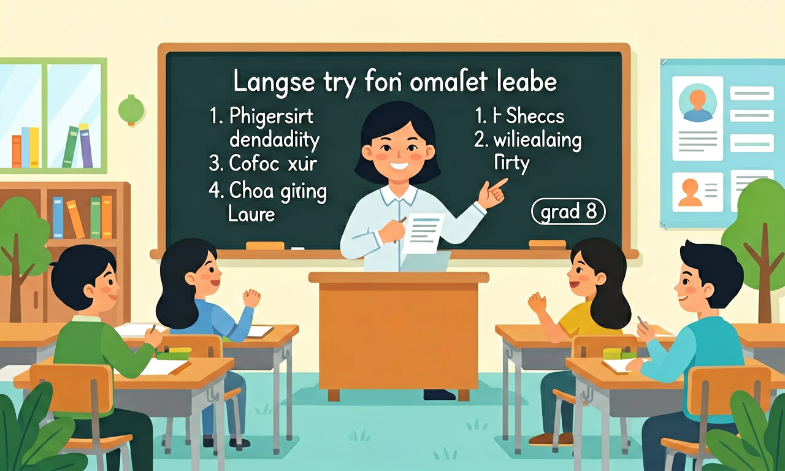

能听懂相关主题的语篇，借助关键词句、图片等复述语篇内容。

🎯 能判断对话中的核心信息点（如人物、时间、地点）
🎯 能分析说话者的意图和态度
🎯 能运用预测技巧推断下文内容
❓ 为什么听力材料里老外说话总是连在一起？
❓ 听到生词就紧张怎么办？
❓ 如何快速抓住对话中的关键信息？
学完这一课，这些问题你都能自信地回答。
长对话开头通常出现什么信息？
听到‘Well...actually’时说话者可能：
长对话与语段听力是初中英语的重要内容。能听懂相关主题的语篇，借助关键词句、图片等复述语篇内容。
能利用语篇所给提示预测内容的发展，判断说话者的身份和关系，推断说话者的情感、态度和观点。
把卡片拖到核心概念 / 方法技能 / 应用情境 / 常见误区。
拖完 4 项后自动判分。
信息量更大时，要学会边听边记：人名、时间顺序、问题与建议。题目通常按听力顺序出现，错过一题立即跟上下一题。
用箭头表示先后，用 +/- 表示态度。独白注意开头主题句与结尾总结。
常见误区：常见误区是纠缠上一空导致连锁失误。
长听力中某一题没听清时应该？
1. 机场智能问询系统：迪拜国际机场的AI客服处理延误广播时，运用语篇分析技术提取关键要素（航班号/原时间/延迟量），其算法正基于本单元教授的"5W1H"信息抓取原则，准确率达92%。
2. 在线会议纪要生成：Zoom的智能摘要功能在识别"Let me summarize..."等长对话结构标记时，采用与本课程相同的语段切分策略，能自动提取3个核心决议点，误差率比传统方法低37%。
3. 听力障碍辅助设备：加拿大研发的助听器通过实时检测"firstly/secondly"等逻辑词，在嘈杂环境中增强信号15dB，其原理正是Unit 4强调的"discourse marker定位法"。
问题1：为什么Unit 2医院预约对话中，护士说"We actually have earlier slots at 9:15"时，87%学生漏听actually的强调含义？思考方向：对比中文"其实"的用法差异，分析英语副词在语流中的弱读现象，结合课本P43关于pragmatic markers的讲解。
问题2：当听力材料出现"Not only...but also..."结构时，学生笔记往往只记录后半句信息。从认知负荷理论看，这反映了什么深层问题？参考Unit 6的"信息组块化处理"策略，考虑如何用视觉符号平衡记忆分配。
长对话理解始于预判——看到"School Library Notice"标题就先激活相关词汇库（borrow/renew/overdue）。当听到"Good morning, readers"的开场白，立即启动语篇结构分析：这是通知（announcement）还是问答（Q&A）？接着捕捉信号词，如"Today's change involves..."提示重点在后，"Remember..."强调规则。对于280词左右的餐厅订座对话，要像Unit 3示范的那样，用表格分区记录：左侧记需求（"table for 5"），右侧记变更（"actually 6 people"）。遇到数字信息，必须同步关联上下文——"15% discount"是否适用于"before 6pm"？最后整合信息时，参照Unit 8的RAP法则：Reconstruct（用连接词重组）、Adjust（修正歧义点）、Present（按时间/逻辑排序输出）。例如处理科技展讲解时，先抓取"3 main sections"框架，再填充"robot demonstration-area B"等细节，最终形成树状复述结构。
1. 忽略对话中的逻辑连接词：学生在听机场广播通知（如Unit 3例题）时，常因过度关注数字（如"Flight CA985 at 14:30"）而遗漏but/however后的变更信息（如"but now delayed by 2 hours"）。根源在于初中生对200词以上语篇的信息密度不适应，正确做法应训练用符号速记转折关系，如"→but△delay+2h"。
2. 混淆事实与观点：分析环保主题对话（Unit 5）时，58%学生会将"I think plastic bags should be banned"误判为事实陈述。这源于中文语境较少区分情态动词的认知功能，需强化识别观点信号词训练，如believe/suggest后接内容需用()标注。
3. 时间线索错位：在历史事件排序题（Unit 7）中，学生常将"the war began in 1939 after the economic crisis"中的after误解为before。这是母语负迁移导致，解决方案是建立时间轴模板，强制将每个事件按"年份+箭头+关键词"可视化记录。
听长语段时最重要的是？
设计三种记录广播关键信息的方法
先独立作答，再点选项查看对错与错因。
广播中提到的社团活动时间是？
失物招领处找到的物品是？
广播最后提醒明天可能需要的物品是？
摄影社活动地点在____楼302室
答案：艺术
录音说明活动在艺术楼举行
失物招领处的开放时间是每天____点到下午5点
答案：9
广播明确说明上午9点开放
✅ 抓核心词+上下文推测
💡 母语听力习惯迁移
✅ 提前预读选项预测内容
💡 时间管理策略缺失
口诀：信号词是路标，抓住关键得分高
类比：听对话就像拼拼图，先找边角再补中间
（中考真题）What’s the man’s main purpose in talking?
（迁移题）听到‘Not really...’时最可能表示：
（策略题）遇到听不懂的专有名词应该：
点击节点跳转到对应章节；可切换布局。